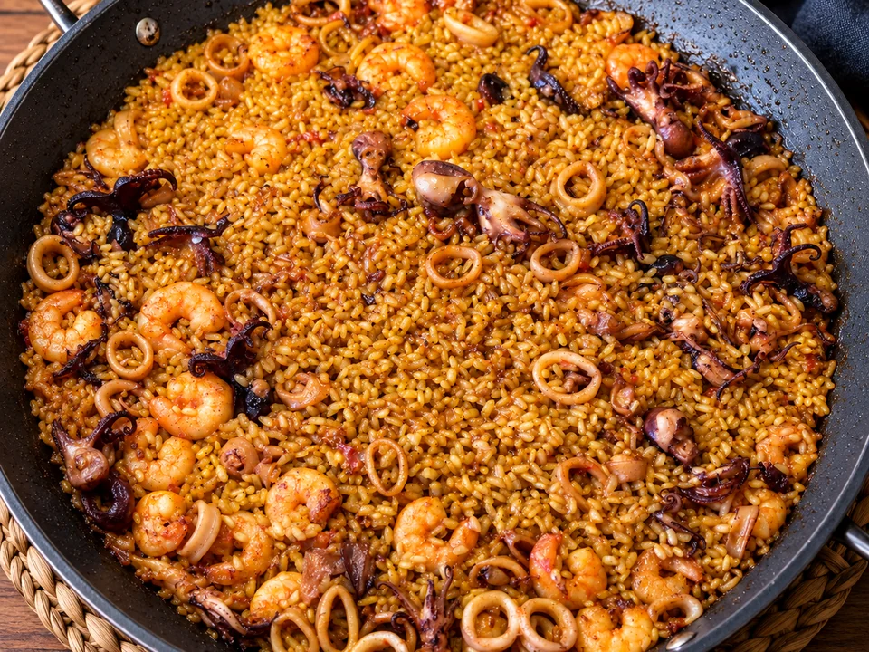

Arroz seco de calamar, pulpitos y gambas
Arroz seco de calamar, pulpitos y gambas, con sofrito de tomate y caldo de pescado.
- Tiempo
- 35–40 min aprox.
- Raciones
- 3 aprox.
- Paellera
- 28 cm

Ingredientes
4 raciones
Marca lo que ya tienes.
- 250 g de arroz redondo
- 800 ml aprox. de caldo de pescado
- 200 g de calamar, limpio y cortado en anillas o trozos
- 200 g de pulpitos limpios
- 150 g de gambas peladas
- 120 g aprox. de tomate triturado o rallado
- 1 cucharadita rasa de pimentón dulce
- 2–3 cucharadas de aceite de oliva virgen extra
- Sal al gusto
Las cantidades de marisco, tomate y pimentón son aproximadas, estimadas a partir de la preparación original.
Preparación
- Calienta el aceite en la paellera y saltea brevemente las gambas. Retíralas y resérvalas para que el aceite conserve su sabor.
- Añade el calamar y saltéalo. Cuando esté hecho, apártalo hacia los bordes de la paellera.
- Cocina los pulpitos en el centro. Cuando estén listos, apártalos también hacia los lados.
- Añade el pimentón en el centro y, enseguida para evitar que se queme, incorpora el tomate. Cocina hasta conseguir un sofrito bien concentrado.
- Devuelve las gambas a la paellera y mezcla todos los ingredientes con el sofrito.
- Añade aproximadamente 800 ml de caldo de pescado. Incorpora los 250 g de arroz y repártelo uniformemente por toda la paellera.
- Desde este momento no remuevas el arroz: cocina 5 minutos a fuego fuerte, 5 minutos a fuego bajo y 5 minutos a fuego medio.
- Apaga el fuego, tapa la paellera y deja reposar 5 minutos antes de servir.
UN POCO DE OFICIO
Para que te salga bien
Consejos
- Una vez añadido el arroz, repártelo bien y evita removerlo durante la cocción.
- El pimentón debe cocinarse solo unos segundos antes de añadir el tomate para que no se queme.
Recomendaciones
Ten el caldo caliente antes de incorporarlo y ajusta la sal al final del sofrito, teniendo en cuenta que el caldo de pescado ya puede aportar sal.
Cómo servir y presentar
Lleva la paellera a la mesa después de los 5 minutos de reposo y sirve el arroz extendido, con el marisco repartido por toda la superficie.
MÁS SOBRE ESTA RECETA
↑ Volver a la recetaArroz seco de calamar, pulpitos y gambas: marisco y sofrito en una sola paellera
Este arroz parte de una idea sencilla: aprovechar el mismo aceite para ir concentrando el sabor de las gambas, el calamar y los pulpitos antes de preparar el sofrito. Después se incorpora el caldo y el arroz, que se cocina sin remover para mantener una capa uniforme y un resultado seco.
El sofrito concentra el sabor
Las gambas se saltean primero y se reservan. El calamar y los pulpitos pasan después por la misma paellera, de modo que el aceite va recogiendo el sabor del marisco. El tomate y el pimentón forman el sofrito que une todos esos jugos antes de añadir el caldo.
Tres cambios de fuego
La cocción marcada en la receta reparte quince minutos entre fuego fuerte, bajo y medio. No se remueve el arroz una vez incorporado: se extiende al principio y se deja cocinar. Ese orden ayuda a que el grano se reparta de forma regular en una paellera de 28 cm.
El reposo final también cuenta
Al apagar el fuego, la paellera se tapa durante cinco minutos. Ese reposo termina de asentar la cocción antes de servir y evita llevar el arroz a la mesa inmediatamente después del último golpe de calor.
Sigue cocinando
Más arroces y fideos
Paella valenciana
Paella valenciana con arroz, pollo, conejo, ferraura, garrofó, tomate, aceite, agua, azafrán y romero.

Fideuà de Gandia
Fideuà de Gandia, hecha con fideo, pescado y marisco sobre un buen caldo marinero.

Arroz a banda
Arroz alicantino cocido en caldo intenso de pescado y servido aparte del pescado.